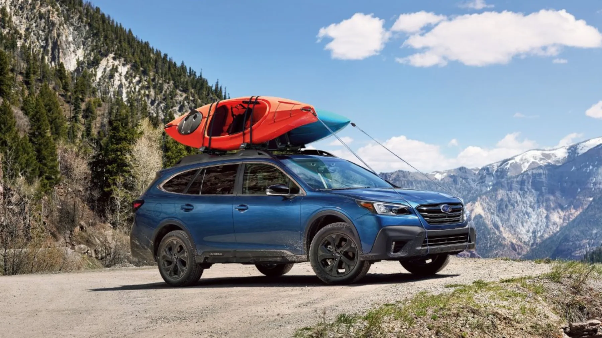
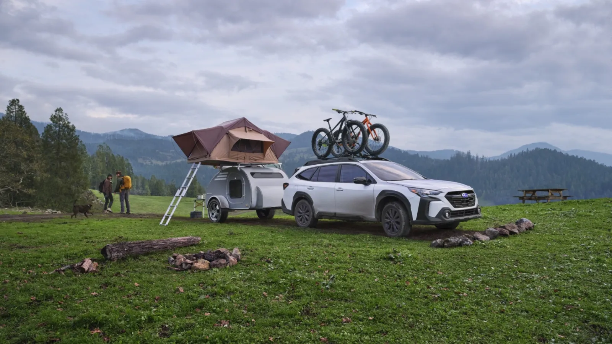

Subaru Outback: Leasing and financing near San Diego.
Dalton Subaru National City leases and finances the new Outback on the Mile of Cars, near San Diego. Because lease terms turn over often, get a real, trim-specific quote and see current offers at subarudalton.com.
DALTON SUBARU NATIONAL CITY · OUTBACKA Subaru Outback at Dalton Subaru National City on the National City Mile of Cars, available to lease or finance for San Diego County drivers.
01From the finance desk
Lease or finance your Subaru Outback.
The Subaru Outback is the all-wheel-drive wagon that defined its category. All-Wheel Drive is equipped on every trim, with 8.7 inches of ground clearance on the standard models and a cargo capacity that easily takes a road bike. The question for many shoppers isn't whether to get one. It's how to pay for it.
Leasing and financing fit different drivers, and our desk caters both every day. Here's how they split.
Leasing an Outback
Leasing keeps your monthly payment lower and rotates you into a new vehicle every two or three years. It fits if you like the newest EyeSight safety tech, you drive predictable miles, and you'd rather not own a vehicle long-term. The catch, and this is the part a lot of buyers gloss over, is the mileage cap. A standard Subaru lease is quoted at 10,000 or 12,000 miles a year. If your commute from Chula Vista or the South Bay runs you past that, the per-mile overage charge at lease-end can erase the monthly savings you signed up for. Just last month our team reviewed a Chula Vista commuter's actual odometer history before quoting a lease, found she was logging closer to 18,000 miles a year, and steered her into finance instead.
Financing an Outback
Financing is the path to ownership. You build equity, you drive as many miles as you want, and once it's paid off, the payments stop.
The U.S. Department of Energy's fueleconomy.gov rates a current non-turbo Outback at 26 city / 32 highway / 29 combined MPG. And because Subaru's horizontally opposed engines are known for going the distance, financing is the smarter math if you tend to keep a vehicle past the loan term. We've had original Subaru finance customers come back to trade Outbacks with well over 150,000 miles on the clock. Those owners often finance again.
There's no universally "right" answer. The right one depends on your annual mileage, how long you plan to keep a car, and your monthly budget. We can run both scenarios for you side by side, and we're happy to have either conversation with you.
We'd rather lose the lease than hand you a bill at turn-in. We run both numbers side by side so you're not guessing.
Note · Lease and finance terms turn over often. The current monthly payment, due-at-signing, and term length live with the sales desk, see today's offers at subarudalton.com or reach us through the Dalton Subaru Contact portal. Reviewed and posted by the Dalton Subaru National City finance team.

Standard Symmetrical All-Wheel Drive on every trim, with 8.7 inches of ground clearance. Whether you lease or finance, the capability is the same.
02Today's offers
Live Outback offers.
Lease and finance offers on the Outback change frequently. They shift with the model year, the inventory on the ground, and Subaru of America's national programs, which reset roughly month to month. Posting a fixed monthly payment here would be wrong by the time you read it, so we don't.
For the current Subaru Outback lease offers, the monthly payment, the due-at-signing amount, the term length, and the mileage allowance on the trims in stock, check the live offers at subarudalton.com or reach the sales team through the Dalton Subaru Contact portal.
Come ready with three things
When you reach out, bring these and the quote goes faster:
The Outback trim you want, base, Premium, Limited, Touring, or the rugged Wilderness. Payment moves with the trim, and the Wilderness in particular carries a different residual than the rest of the lineup.
Your annual mileage, leases are quoted against a mileage allowance, so an honest number keeps the math real and saves you from overage charges later.
Your timeline, whether you're signing this week or this month helps us match you to the right current program before it rolls over.
A note from the desk: offers and inventory shift constantly. The fastest way to confirm today's Outback programs and what's physically on our lot is to check the live offers at subarudalton.com or reach us through the Dalton Subaru Contact portal.
03The lineup
A quick walk through the Outback lineup.
Knowing the trims before you walk the lot makes the lease-versus-finance call easier, because residual value, the chunk of a lease payment that's set by what the vehicle is worth at the end of the term, varies across the range. Our team frames it this way for shoppers.
Subaru's own film on the 2026 Outback and the Outback Wilderness, useful for seeing how far apart the two ends of the lineup sit.
VolumeMost popular
Outback & Premium
The volume sellers. EyeSight Driver Assist Technology, Symmetrical All-Wheel Drive, and the larger touchscreen on the Premium. For a commuter who wants the AWD safety story without the top-trim sticker, this is where most leases land.
ComfortFinance pick
Outback Limited
Leather and more tech. Leather-trimmed seating, more standard tech, and the creature comforts that make a longer haul up the 805 or out to the desert pleasant. A common finance pick for families who plan to keep the vehicle.
LoadedStrong residual
Outback Touring
The loaded trim. Nappa leather, the works. Strong residuals here can make the monthly lease gap to a Limited smaller than buyers expect, worth asking us to run.
9.5" clrOff-pavement
Outback Wilderness
The rugged one. Raised to 9.5 inches of ground clearance, a unique transmission tune, all-terrain tires, and towing bumped to 3,500 lbs. Heading to Anza-Borrego or towing a small trailer? This is the one, and it tends to hold value well. The caveat: the tires and taller stance trim a little off highway MPG.
You should know this about the Wilderness though: if you never leave the pavement, you'd be paying for capability you won't use.

The Wilderness bumps ground clearance to 9.5 inches and towing to 3,500 lbs. It holds value well, which helps the lease number. Only buy the capability if you will use it.
Strong safety scores feed strong resale.
The Insurance Institute for Highway Safety (iihs.org) has named recent Outback model years a TOP SAFETY PICK+, its highest award, which is part of why the Outback leases as well as it does. Strong safety scores feed strong resale, and strong resale is what keeps a lease payment reasonable.
04The math
Lease vs. finance: how the numbers differ.
A lot of shoppers walk in fixed on one path before they've seen what the other one costs. We use this framework at the desk to make it concrete, without quoting a payment that'll be stale next week.
Comparison
LeaseDrive newer, more often
FinanceBuild equity, own it
Built on
Cap cost, residual value, money factor
Full price, down payment, term, APR
You're paying for
Depreciation over the term, plus rent charge
The whole vehicle
Monthly payment
Lower
Higher
Mileage
Capped (typically 10k–12k/yr)
Drive as many miles as you want
At the end
Return it; rotate into a new Outback
You own an asset; payments stop
Best for
Newest tech every few years, mileage under the cap
Keeping it five-plus years and driving real miles
Lower monthly
Lease
Drive newer, more often
Built on
Cap cost, residual, money factor
Mileage
Capped, typically 10k–12k/yr
Best for
Newest tech every few years; mileage under the cap
Build equity
Finance
Build equity, own it
Built on
Full price, down, term, APR
Mileage
Drive as many miles as you want
Best for
Keeping it five-plus years and driving real miles
A lease payment is built on three things: the capitalized cost (essentially the negotiated price), the residual value (what Subaru of America projects the Outback will be worth at lease-end), and the money factor (the lease equivalent of an interest rate). You're paying for the depreciation across your term, plus rent charge, not the whole car. That's why the monthly is lower. The Outback's strong residuals, which trace back to its safety scores and Subaru's reliability reputation, are the reason it leases better than a lot of competitors in its segment.
A finance payment is built on the full price, your down payment, the loan term, and the APR. You're buying the whole vehicle, so the monthly is higher, but every payment buys equity, and you own an asset at the end. For resale and trade-in context, independent valuation sources like Kelley Blue Book (kbb.com) and Edmunds (edmunds.com) publish Outback residual and resale data you can sanity-check our finance math against. We encourage it, since we want our customers to be as informed as possible.
The practical rule: keep it five-plus years and drive real miles, finance. Want the newest tech every few years and your mileage is under the cap, lease. Everyone in the middle should let us run both.
05The fine print
Title, registration, and the fine print.
California adds line items that out-of-state shoppers don't always expect, so we lay them out before you sign. We walk every customer through their specific numbers; we don't bury them.
Vehicle registration, title, and the use-tax handling all run through the California DMV (dmv.ca.gov), and the way tax applies differs between a lease and a purchase. On a California lease, sales tax is generally applied to your monthly payment rather than the full vehicle price up front, one of the practical differences that can shift the lease-versus-finance math.
What we won't do is quote you a "too good to be true" payment that hides fees in the back end. That's not how this team operates.
That straight-dealing approach is part of why former Frank Subaru owners kept coming back after the rebrand. When you sit down with us, the numbers you see are the numbers you sign, line items explained, nothing tucked into the back end.
06The process
How the Outback lease & finance process works.
Getting from searching "Subaru Outback lease" to driving one off the Mile of Cars is straightforward. Here's the process.
See the current offers. Start at subarudalton.com to view today's Outback lease and finance programs and the trims in stock.
Pick lease or finance. Decide which path fits your mileage, budget, and how long you plan to keep the vehicle, or let our team run both so you can compare side by side. We'll print both quotes; there's no charge for the comparison.
Choose your Outback. Narrow to the trim and color from current inventory. We walked the lot this week and the Premium and Limited trims are the deepest stock; Wilderness availability is tighter, so call ahead if that's your target.
Visit the dealership. Stop by 2829 National City Blvd for a test drive and to finalize numbers with the sales team.
Sales is open seven days a week, Monday through Saturday from 8:30 AM to 8:00 PM, and Sunday from 10:00 AM to 6:00 PM, so you can sort out a lease or finance deal on your schedule, weekends included. You can reach the dealership through subarudalton.com or the Dalton Subaru Contact portal.
The single biggest surprise at turn-in is wear-and-tear and mileage charges, and it's avoidable. A Subaru lease holds you to a mileage cap and a normal-wear standard. We've had customers roll in 4,000 miles over and owe real money, money that, in hindsight, a finance deal would have spared them entirely.
Be honest about your driving
California's average is roughly 12,000–13,000 miles a year per the U.S. DOT's Federal Highway Administration (fhwa.dot.gov), if your number is higher, a 10,000-mile lease is a trap, and we'll steer you to finance or a higher mileage tier instead.
Handle the small stuff during the term
If you do lease, take care of the small dings during the term, not at the end, when the lease-return inspector prices them. A scuff fixed early costs a fraction of what it does on the turn-in sheet.
The flip side of this is that leasing favors low-mileage drivers who like staying up to date with safety tech. For business use cases, we know the structure can make sense, but you should talk to your tax advisor about that first before signing anything. We aren't against leases. What we don't like are surprised customers.
Verify · Before you sign a lease, bring an honest annual-mileage figure and we'll match it to the right allowance, or recommend financing if the math says so. Reach us through the Dalton Subaru Contact portal to run both.
08Why Dalton
Why lease or finance at Dalton Subaru National City.
Where you sign matters as much as what you sign. Dalton Subaru National City is an established Subaru dealership staffed by the same team that served San Diego County drivers under the former Frank Subaru name, now operating as Dalton Subaru as part of the Dalton Corporation.
4.7 ★
Google rating across 4,448 reviews
AWD std
Symmetrical AWD on every Outback trim
Both
Lease and finance quoted side by side
Love
Subaru Love Promise Community Commitment Award
That continuity means the people structuring your Outback lease or finance deal today have been doing it in this market for years. When we say we've watched these cars hold value, that's first-hand, not a brochure line, we've inspected and reconditioned plenty of high-mileage Outback trade-ins that came back to this lot, and we verified their resale strength against the independent guides before quoting a number.
The dealership sits on the National City Mile of Cars at 2829 National City Blvd, National City, CA 91950, minutes from Chula Vista and central San Diego, and an easy drive from across San Diego County. It carries a 4.7-star Google rating backed by 4,448 reviews from local owners (pulled live from Google), which is a fair signal to weigh when you're deciding where to commit to a multi-year lease or loan.
We're also part of Subaru's national Subaru Love Promise community commitment and a recipient of the Subaru Love Promise Community Commitment Award, the program that ties this store to the neighborhoods of National City, Chula Vista, and the wider county it serves.
Serving National City, Chula Vista & San Diego County
Dalton Subaru National City is locally rooted and serves drivers throughout National City, Chula Vista, San Diego County, and the surrounding Southwest California area. If you leased or financed with this team before the Dalton rebrand, you'll find the same faces. If you're new to Subaru, you'll get a dealership that treats a lease or loan as the start of a long relationship, not a one-time signature.
Visit the showroom at 2829 National City Blvd, National City, CA 91950, on the Mile of Cars
Contact the sales team through the Dalton Subaru Contact portal to run lease and finance numbers
Sales hours are Monday–Saturday 8:30 AM – 8:00 PM and Sunday 10:00 AM – 6:00 PM. When you're ready to move on an Outback, the path is short: see today's offers online, pick your trim, decide lease or finance, and let us handle the paperwork in the showroom.
Dalton Subaru National City
Who you're signing the lease with.
The same store local owners knew as Frank Subaru, now operating as Dalton Subaru National City under the Dalton Corporation: same people, same finance desk, same showroom. We serve National City, Chula Vista, and the wider San Diego County area.
4.7 ★
Google rating · 4,448 reviews
8.7 ″
Ground clearance, standard on every trim
AWD
Symmetrical All-Wheel Drive on every trim
3,500 lbs
Towing on the Wilderness trim
The finance desk
We work both sides every day. Tell us your trim, your annual mileage, and your timeline, and we'll run lease and finance side by side and print both quotes, total cost, not just the monthly.
No "too good to be true" payments that hide fees in the back end. The numbers you see are the numbers you sign.
For existing owners, nothing about who structures your deal changed.
The Outback at our store
Standard Symmetrical All-Wheel Drive on every trim. 8.7 inches of ground clearance, 9.5 on the Wilderness, which tows up to 3,500 lbs.
EyeSight Driver Assist Technology and a lineup spanning base, Premium, Limited, Touring, and Wilderness. Recent model years named IIHS TOP SAFETY PICK+.
EPA-rated 26 city / 32 highway / 29 combined MPG on the non-turbo trims per fueleconomy.gov.
Frequently asked questions about Subaru Outback lease offers.
What are the current Subaru Outback lease offers near San Diego?
Outback lease and finance offers change with the model year, inventory, and Subaru of America's national programs, which reset roughly monthly.
For today's monthly payment, due-at-signing amount, and term, see the live offers at subarudalton.com or reach the Dalton Subaru National City sales team through the Dalton Subaru Contact portal.
Should I lease or finance a Subaru Outback?
Leasing keeps your monthly payment lower and rotates you into a new Outback every two or three years, but it caps your annual mileage. Financing builds ownership and lets you drive unlimited miles, which usually wins if you keep a vehicle past the loan term.
The right choice depends on your mileage, budget, and how long you keep a car, our team will run both so you can compare.
What's the mileage limit on an Outback lease?
Subaru leases are typically quoted at 10,000 or 12,000 miles per year. Per the U.S. DOT's Federal Highway Administration, the U.S. average is around 12,000–13,000 miles, so if your commute runs high, ask us about a higher mileage tier or whether financing is the better call.
Going over the cap means a per-mile charge at turn-in.
How much ground clearance does the Outback have?
Standard Outback trims have 8.7 inches of ground clearance; the Outback Wilderness raises that to 9.5 inches and bumps tow capacity to 3,500 lbs. Both come standard with Symmetrical All-Wheel Drive.
What's the Outback's fuel economy?
Per fueleconomy.gov, a current non-turbo Outback is EPA-rated at 26 city / 32 highway / 29 combined MPG. The Wilderness and turbocharged trims rate a little lower because of their tires and tuning.
Is the Outback a good vehicle for San Diego driving?
For most local drivers, yes. The Symmetrical All-Wheel Drive and ground clearance handle the occasional run to the mountains or the desert, while the EPA-rated 29 combined MPG (per fueleconomy.gov on the non-turbo trims) keeps the freeway commute affordable.
The Wilderness is the pick if you're regularly off-pavement; the Premium or Limited is the better value if you mostly stay on the 5 and the 805.
Can I trade in my current vehicle toward a lease or finance deal?
Yes. Bring it in and we'll appraise it. Check Kelley Blue Book or Edmunds beforehand so you have an independent number to compare against ours, we'd rather you walk in informed.
Where do I get a Subaru Outback lease quote, and what are the sales hours?
Start at subarudalton.com or use the Dalton Subaru Contact portal, or visit Dalton Subaru National City at 2829 National City Blvd, National City, CA 91950, on the Mile of Cars, minutes from Chula Vista and San Diego.
Sales hours are Monday through Saturday, 8:30 AM to 8:00 PM, and Sunday, 10:00 AM to 6:00 PM.
·Related reading
More from Dalton Subaru National City
Weighing a lease against a purchase? These guides help you compare trims, models, and what the used lane looks like here.
Last reviewed by the Dalton Subaru National City finance team · August 1, 2026
Editorial byline
Reviewed and posted by the Dalton Subaru National City finance team
Lease and finance quotes handled in-house at the sales desk.
Dalton Subaru National City · 2829 National City Blvd, National City, CA 91950
Subaru Outback specifications described from Subaru's published model information at subaru.com. Fuel-economy figures are EPA estimates from fueleconomy.gov; a current non-turbo Outback is rated 26 mpg city / 32 highway / 29 combined. Safety awards should be verified at iihs.org; California title, registration, and tax handling are administered by the California DMV at dmv.ca.gov. Lease and finance offers, residuals, money factors, incentives, mileage allowances, and pricing change with Subaru of America's national programs and as inventory moves, and should be re-verified before any deal is signed. For a current quote on a specific Outback build, reach Sales through the Dalton Subaru Contact portal.
If a question about Subaru Outback lease offers at Dalton Subaru National City is not answered here, reach a sales advisor through the Dalton Subaru Contact portal, or see current Outback offers at subarudalton.com.
Your next Subaru Outback is waiting on the Mile of Cars. See current lease and finance offers at subarudalton.com, reach us through the Dalton Subaru Contact portal, or visit Dalton Subaru National City at 2829 National City Blvd. Serving National City, Chula Vista, and all of San Diego County.
Lease & finance offers. We do not publish payment, APR, money-factor, residual, or lease figures on this page because those terms change frequently and depend on credit tier, term, trim, down payment, and the manufacturer program running that day. Nothing on this page is an offer, a quote, or a guarantee of approval. All financing and leasing is subject to credit approval. Ask our team for current numbers on your specific situation.
Mileage allowances. The 10,000- and 12,000-mile-per-year figures describe typical Subaru lease structures, not a fixed term. Excess-mileage and excess-wear charges apply at lease-end per your lease agreement. The 18,000-mile commuter example is illustrative, not a threshold or a rule.
Inventory & availability. Outback trims described here (Outback, Premium, Limited, Touring, Wilderness) reflect the lineup at publication and shift as vehicles are sold and delivered. This page is not a guarantee that any specific trim, color, or configuration is currently on the lot. Confirm live availability at subarudalton.com before visiting.
Specifications. Ground clearance (8.7 inches standard Outback, 9.5 inches Wilderness) and the 3,500-lb Wilderness towing capacity are approximate and vary by trim, model year, and configuration. Towing capacity depends on proper equipment and correct loading. Confirm exact figures on the specific vehicle's window sticker or at subaru.com.
Fuel economy. The 26 city / 32 highway / 29 combined MPG figures are EPA estimates for a current non-turbo Outback per fueleconomy.gov. Turbocharged and Wilderness trims rate lower. Your actual mileage will vary with driving conditions, load, and maintenance.
Safety. IIHS TOP SAFETY PICK+ recognition applies to specific Subaru Outback model years and build configurations as tested by the Insurance Institute for Highway Safety (iihs.org) and does not carry across all model years. EyeSight Driver Assist Technology is a driver-assist system, not a substitute for attentive driving. Check open recalls for any VIN free at nhtsa.gov.
Resale & residual value. Statements about the Outback holding value reflect our own trade-in experience and independent guide data at publication. Residual values are set by the lender on each program and are not a prediction of your vehicle's future market value. For independent research, see kbb.com and edmunds.com.
Title & registration. California title, registration, and tax handling are administered by the California DMV (dmv.ca.gov). Fees quoted at the desk are estimates until the deal is finalized.
Rating & reviews. The 4.7-star Google rating across 4,448 reviews reflects Dalton Subaru National City's Google Business Profile as of publication. Review counts are pulled live and change over time; confirm the current figure on the live Google profile.
Hours. Sales hours (Monday–Saturday 8:30 AM–8:00 PM, Sunday 10:00 AM–6:00 PM) are current at publication and subject to change on holidays. Confirm hours before visiting.
Published 2026-08-01 by Dalton Subaru National City, 2829 National City Blvd, National City, CA 91950.